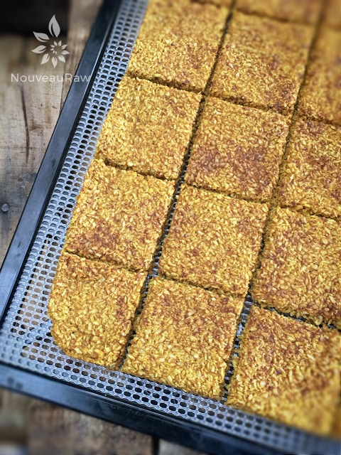

Pumpkin Coconut Crackers

~ raw, vegan, gluten-free, nut-free ~
As you may be aware, I have been creating a lot of variations of these crackers. And I couldn’t wait for the Fall season to arrive so I could hop on the pumpkin bandwagon.
Not only do I love the fact that these crackers are nut-free, grain-free, gluten-free but they are also sugar-free. Well, let me clarify that… there are natural sugars in the pumpkin and banana, but no added sugars were added or needed. The key is to use ripe pumpkins and bananas, and with those, you are golden.
Speaking of sugar pumpkins… which is what I recommend for this recipe or for making pumpkin puree. You will spot them at the grocery store (when in season) by their petite size. They only grow to be six to eight inches in diameter, but they are one of the sweetest varieties. The bright orange flesh is known not only for its flavor but also how it blends down to a smooth consistency.
The beautiful orange color of the pumpkin is loaded with the antioxidant beta-carotene, which is one of the plant carotenoids converted to Vitamin A in the body. Vitamin A is essential for healthy, glowing skin, strong eyesight, and helping our immune system. To absorb this vitamin, it needs to be consumed with fat, since it is fat-soluble. Thank you shredded coconut for your fat content, making the nutrients in these crackers more bioavailable in the body. There is always a method to my madness when creating recipes. :)
If you happen to stumble upon this recipe in the off-season of pumpkins, and you don’t mind using the organic, BPA-free, no other ingredients added… canned version… then this cracker can be enjoyed year-round. Or better yet… I make it my practice to buy extra sugar pumpkins in the Fall, puree them, and freeze them for future recipes. If you do end up using canned pumpkin, just make sure it doesn’t have any seasonings added… if it does, then you might need to omit the use of pumpkin spice.
So here we go. It’s cracker making time. I hope you enjoy this recipe and look forward to hearing from you. With love, blessings, and pumpkin sweetness… amie sue
Ingredients:
Yields 16 crackers
- 3 cups (236 g) shredded dried, coconut
- 1 Tbsp pumpkin spice
- 1/4 tsp Himalayan pink salt
- 1 3/4 cups (425 g) raw sugar pumpkin puree
- 1/2 cup (90 g) diced, ripe banana
Preparation:
- In a food processor, fitted with the “S” blade, combine the shredded coconut, pumpkin spice, and salt. Make sure they get well mixed.
- If you don’t have shredded coconut but have large pieces of dried coconut… that’s ok too. Just make sure to process until it reaches a small crumble size. This is the “flour” for the cracker base.
- Add the pumpkin puree, banana, and sweetener (if needed), processing until it becomes a spreadable batter.
- The sweetener is generally not needed. Taste first. I use sugar pumpkins which tend to be naturally on the sweet side.
- If you are trying to reduce your added sugars and feel that it does need some sweetening, try a squirt of liquid NuNaturals stevia.
- Line the dehydrator tray with a non-stick teflex sheet.
- Spread the batter from edge to edge or until it reaches at least 1/4″ thick. I wouldn’t go any thinner, so you have a nice sturdy cracker.
- Make sure that you spread it evenly, so it dries evenly.
- Score the crackers into desired shapes and sizes. You can use a pizza cutter or a long metal ruler to create the score marks. I used my 5-wheel pastry cutter.
- Sprinkle coarse sea salt on top. This will add a layer of flavor as well as amp up the sweet flavors.
- Dehydrate at 145 degrees (F) for 1 hour, then reduce to 115 degrees (F) and continue drying for 10+ hours… until dry and crispy.
- Snap apart and let cool before storing, store in an airtight bag/container.
- They should last several weeks in the pantry and can be frozen for 1-2 months. If they start to soften due to humidity, throw them back in the dehydrator to crisp up.
Culinary Explanations:
- Why do I start the dehydrator at 145 degrees (F)? Click (here) to learn the reason behind this.
- When working with fresh ingredients, it is important to taste test as you build a recipe. Learn why (here).
- Don’t own a dehydrator? Learn how to use your oven (here). I do however truly believe that it is a worthwhile investment. Click (here) to learn what I use.

I like to cover the batter with plastic wrap and roll it out nice and even. And below you see my using my handy-dandy 6-wheel pastry cutter that I ADORE for scoring crackers and croutons.


© AmieSue.com